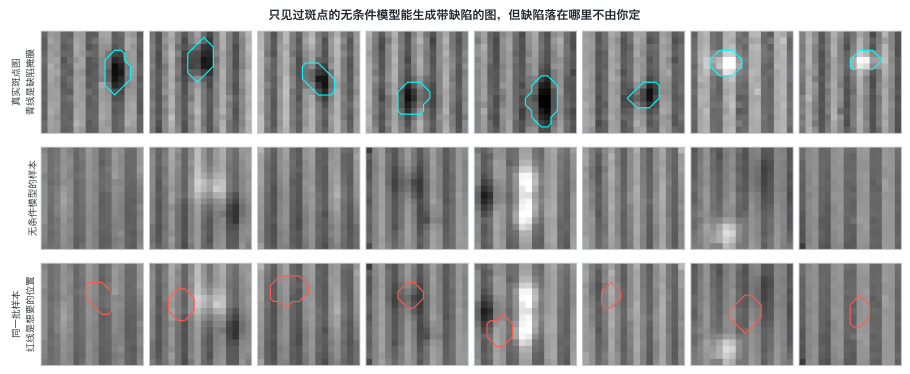
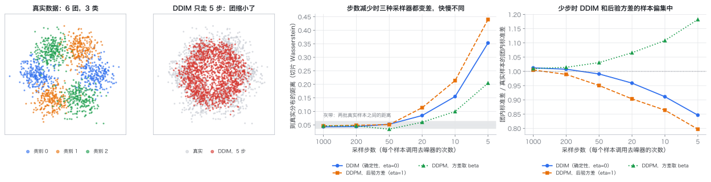
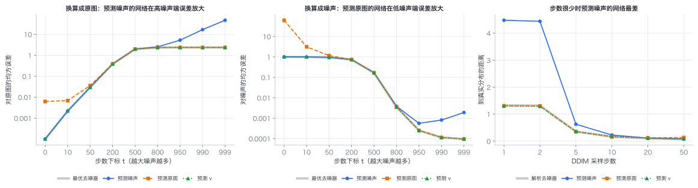
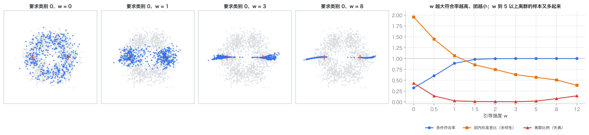
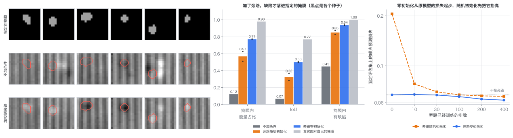
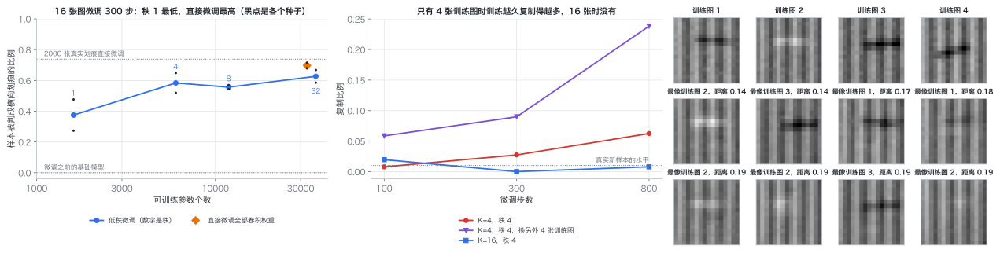
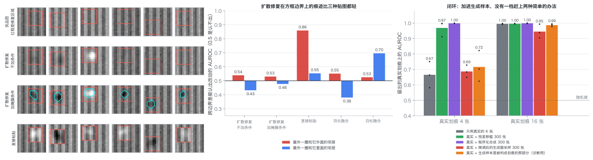

本章所有数字都来自代码生成的数据和很小的网络上的实测，记录在 figures/实测数字.json，由 solutions 分支的 solutions/figures/ch29.py 生成。实验分两组：二维的 6 团点分布配一个 39874 个参数的 MLP，用来量采样器、参数化和引导；16×16 的条纹小图加缺陷配一个 42097 个参数的小 UNet，用来量掩膜条件、低秩微调、修复和闭环。噪声表沿用第 20 章作业的参考实现，参数化的换算、DDIM 的一步、引导的组合、LoRA 的前向与合并、修复时的替换用的是本章作业的参考实现。脚本在一台 Mac 的 CPU 上跑一遍用时 250 秒左右（一次测量），重复运行结果相同。这两个小模型比 Stable Diffusion 小好几个数量级，“真实”缺陷也是代码画的，结论只在所写的条件下成立；换成真实图像和预训练的大模型，数值会变，方向要自己再测一遍。本章没有下载任何预训练权重，第 8 节的代码没有在写课程的机器上运行过，那一节没有任何实测数字。
0. 本章怎么学
应用场景：可控的缺陷图像合成，对应岗位要求里的图像生成。第 20 章回答了“合成缺陷什么时候帮倒忙”，用的是程序化合成和剪贴。本章接着讲用扩散模型造缺陷时要解决的几件事：怎样采样、怎样指定生成什么和生成在哪、只有十几张新缺陷时怎样让模型学会、怎样在一张指定的良品图上长出缺陷，以及这样造出来的数据到底有没有用。
优先级：P2，按方向，分到做数据合成或图像生成的方向时再学。前置是第 20 章（合成缺陷与生成模型）。前向过程、噪声表、信噪比和训练目标在第 20 章 5.3 节讲过并量过，本章直接用，符号和下标的约定与它一致，不重复。
| 档位 | 累计用时 | 做什么 | 做到什么算完 |
|---|---|---|---|
| 速通 | 3 小时 | 读第 1 节、2.1 节、2.3 节、3.2 节、4.2 节、5.2 节、6.2 节、7.2 节，看懂图 1 到图 7，把第 9 节演示的五步试一遍，答完 5 道小测 | 能讲清 DDIM 和 DDPM 的一步差在哪、步数少的时候样本各往哪个方向偏，引导强度换来了什么又付出了什么，控制旁路为什么要零初始化，怎样量出生成器在复制训练图，生成的缺陷图进训练集之前要查什么 |
| 标准 | 12 小时 | 读完全章（第 8 节只读不跑），跑 Notebook，完成作业并验收通过，做第 12 节前三个破坏实验，填实验记录 | 五项测试 PASS，实验记录里有采样器和步数的一组数、引导强度的权衡曲线、掩膜条件对得上的程度、微调后的复制比例，和一个生成样本没有帮上忙的案例 |
| 深挖 | 20 小时 | 再做其余破坏实验，按第 8 节在自己的显卡上跑 Stable Diffusion 的文生图和 inpainting，做第 13 节的扩展（选一个） | 能在自己的一类图像上给出带条件的结果：用的是哪个权重、分辨率、步数、引导强度，显存峰值是怎么量的，inpainting 之后掩膜外有没有被改动、是怎么检查的 |
用时超过所选档位的 1.5 倍还没做完，就把卡点写进 学习进度.md，先往下一章走。标准档不需要下载任何东西。深挖档要装包、联网下载几个 GB 的权重，网络和环境问题最容易卡住，卡超过一小时就先回到 Notebook 的小模型把结论做完。
1. 为什么需要：会训练去噪网络，还不等于会造缺陷
第 20 章 5.3 节把前向过程、噪声表和训练目标都量了一遍，最后一句是“反向采样和条件生成不在本章范围内”。也就是说，学完那一章你会训练一个去噪网络，但还没有用它生成过一张图。先把它直接用起来，看缺什么。
数据是 16×16 的竖条纹小图：条纹周期 4 px，每张图的横向平移随机，增益在 0.9 到 1.1 之间，像素噪声标准差 0.02。缺陷是“斑点”：一个椭圆形的高斯轮廓，幅度 0.2 到 0.4，亮暗各半。去噪网络是一个小 UNet（16×16 和 8×8 两个尺度，8 个 3×3 卷积），在 4000 张斑点图上按第 20 章的训练目标训练 2000 步。它没有任何条件输入，所以叫无条件模型。采样用 2.1 节要讲的 DDIM，走 20 步。
评价要两样工具。一是一个判别器：三层卷积的小分类器，用良品、斑点、横向划痕（第 5 节要用的另一种缺陷）各 1500 张真实图训练，在留出的真实图上三类的精度是 1.0、0.998、1.0，用它判断一张生成的图像哪一类。二是残差：条纹沿竖直方向不变，把图减去每一列的中位数，剩下的就是缺陷和噪声；阈值取良品图残差最大绝对值的 99% 分位。

| 500 张图（DDIM 20 步；掩膜的平均面积占整张图的 0.071） | 判成斑点 | 判成良品 | 掩膜内能量占比 | IoU | 掩膜内有缺陷 |
|---|---|---|---|---|---|
| 真实斑点图，对它自己的掩膜 | 1.0 | 0.0 | 0.979 | 0.768 | 1.0 |
| 无条件模型的样本，对另外指定的掩膜 | 0.796 | 0.204 | 0.121 | 0.066 | 0.448 |
“掩膜内能量占比”是超过阈值的残差的平方和里，落在指定掩膜内的比例；IoU 是残差超过阈值的区域和指定掩膜的交并比；“掩膜内有缺陷”是掩膜内残差超过阈值的图所占的比例。
- 能生成带缺陷的图，但不是每张都有。训练图全部带斑点，样本里只有 0.796 被判成斑点，0.204 被判成良品。把这批图全部当成“缺陷图”送去训练，五张里有一张标签是错的。
- 缺陷落在哪里不由你定。掩膜内能量占比只有 0.121，IoU 0.066，和随便放差不多。“掩膜内有缺陷”有 0.448，看上去不低，那是因为掩膜和缺陷都有好几个像素宽、又都在图的中间一带，碰巧搭上的机会本来就大；这一列的随机水平很高，后面主要看前两列。
- 采样有代价。按前向过程的反方向一步一步走回来，一张图要调用网络 1000 次；这里走的 20 步是它的五十分之一。少走的步数从哪里省出来、会损失什么，是第 2 节的内容。
- 只会它见过的那一种缺陷。500 个样本里被判成横向划痕的比例是 0。新出现的缺陷类型手上常常只有十几张图，从头训练不够。
- 背景是模型自己编的。每张图的条纹相位、增益都是采样出来的，没法在一张指定的良品图上只加一个缺陷，而第 20 章反复强调过，背景和成像链要对得上。
这五条依次对应第 2 节（采样）、第 3 和第 4 节（条件）、第 5 节（微调）和第 6 节（修复）。Stable Diffusion、ControlNet、LoRA、inpainting 这几个名字各自解决其中一件。第 7 节回到第 20 章的问题：这样造出来的缺陷图，拿去训练检测器有没有用。
2. 采样：从噪声走回数据
2.1 一步更新：DDPM 和 DDIM
沿用第 20 章的记号。前向过程的闭式是
\(\bar\alpha_t\) 是噪声表的累计乘积，下标从 0 开始：线性表 1000 步时 \(\bar\alpha_0\) 是 0.9999，\(\bar\alpha_{999}\) 是 4e-05。网络 \(\varepsilon_\theta(x_t, t)\) 预测加进去的噪声，记它的输出为 \(\hat\varepsilon\)。第 20 章 5.3.4 节已经用过：有了 \(\hat\varepsilon\) 就能反解出对原图的估计
采样的一步是从噪声水平 \(\bar\alpha_t\) 走到噪声少一些的 \(\bar\alpha_s\)。做法是把 \(\hat{x}_0\) 和 \(\hat\varepsilon\) 按新的噪声水平重新组合起来，再看情况补一点新的随机噪声 \(z\)：
三项各管一件事：第一项是“按现在的估计，原图是什么”；第二项沿着刚才估计出的噪声方向退回去一部分；第三项是新加的随机噪声。信号的系数平方加上两项噪声的方差仍然是 1，和前向过程的方差保持一致。\(\eta\) 决定新噪声占多少，本章比较三种取法：
| 名字 | 怎么取 | 说明 |
|---|---|---|
| DDIM | \(\eta = 0\)，\(\sigma = 0\) | 出自 Song、Meng、Ermon 2021 年的 Denoising Diffusion Implicit Models。整个采样过程没有随机数，同一份初始噪声总是得到同一张图 |
| DDPM，后验方差 | \(\eta = 1\) | 出自 Ho、Jain、Abbeel 2020 年的 Denoising Diffusion Probabilistic Models。这时 \(\sigma^2\) 是给定 \(x_t\) 和 \(x_0\) 时 \(x_s\) 的后验方差 |
| DDPM，方差取 beta | 均值同上一行，新噪声的方差换成 \(1-\bar\alpha_t/\bar\alpha_s\) | DDPM 论文里的另一种取法，相邻两步时它就是 \(\beta_t\)。论文报告两种方差在走满全部步数时结果相近 |
这个式子就是作业的 ddim_step。有三点在后面反复用到：
- 可以跳步。式子里只出现 \(\bar\alpha_t\) 和 \(\bar\alpha_s\)，没有要求 \(s\) 是 \(t-1\)。从 999 到 0 等间隔取 20 个下标（999、946、894，一直到 53、0，间隔 52 或 53），照样一步一步走，就是“20 步采样”。最后一步走到 \(\bar\alpha_s = 1\)，也就是干净的图，这时 \(\sigma = 0\)，结果就是 \(\hat{x}_0\)。
- 网络不用重新训练。三种采样器、任意步数，用的都是同一个按第 20 章的目标训练出来的网络。第 13 章第 4 节说过，减少采样步数改的是采样过程，不是“训练时少加几次噪声”。
- DDIM 是确定的。固定初始噪声之后，改一个设置前后的差别全部来自这个设置。本章后面比较引导强度、掩膜条件、微调前后，用的都是同一批初始噪声。
2.2 怎样量采样的好坏
采样得好不好，要拿样本和真实分布比。16×16 的图不好直接比，所以采样器和参数化的实验先在二维上做：6 团高斯点，团心在半径 2 的圆上每隔 60 度一个，团的标准差 0.6；按 0、1、2、0、1、2 的顺序分成 3 类，每类是相对的两团（图 2 左一）。
选这个分布有一个好处：它在任意噪声水平下的最优去噪结果 \(\mathbb{E}[x_0 \mid x_t]\) 有解析式。把它当成一个“完美训练的网络”，采样结果里剩下的误差就全是采样器的；再换成真正训练出来的网络，多出来的才是网络的误差。两种误差在真模型上是混在一起的，这里可以拆开看。
两个指标：
- 到真实分布的距离：切片 Wasserstein 距离。把两组各 4000 个点往 32 个方向上投影，每个方向上各自排序后逐个相减取绝对值，再平均。两批真实样本之间的距离平均是 0.046（8 次，0.035 到 0.064），采样结果落到这个范围里，就已经分不出好坏。
- 团内标准差比：把每个点分给最近的团心，各团的标准差取平均，再除以真实样本按同样办法统计出的值。小于 1 是样本比真实数据更集中，也就是多样性少了。分母不直接用 0.6，是因为相邻的团有重叠，分给最近的团心会把尾巴切掉，真实样本这样统计出来是 0.554。
2.3 步数从多到少
三种采样器从同样的噪声出发，步数从 1000 减到 5，去噪用解析式：

| 采样步数（解析去噪器，4000 个点，3 个采样种子的平均） | 1000 | 200 | 50 | 20 | 10 | 5 |
|---|---|---|---|---|---|---|
| DDIM：到真实分布的距离 | 0.043 | 0.044 | 0.052 | 0.085 | 0.155 | 0.353 |
| DDPM 后验方差：距离 | 0.046 | 0.049 | 0.051 | 0.114 | 0.214 | 0.44 |
| DDPM 方差取 beta：距离 | 0.046 | 0.046 | 0.034 | 0.06 | 0.099 | 0.205 |
| DDIM：团内标准差比 | 1.01 | 1.01 | 0.99 | 0.96 | 0.91 | 0.85 |
| DDPM 后验方差：团内标准差比 | 1.0 | 0.99 | 0.95 | 0.9 | 0.86 | 0.8 |
| DDPM 方差取 beta：团内标准差比 | 1.01 | 1.01 | 1.03 | 1.07 | 1.11 | 1.18 |
- 50 步时三种采样器都还在“分不出好坏”的范围里（0.052、0.051、0.034，两批真实样本之间是 0.035 到 0.064）。调用去噪器的次数是 1000 步的二十分之一。
- 步数再少，三种都变差，但偏的方向不一样。DDIM 和后验方差的 DDPM 让团缩小，5 步时团内标准差只有真实的 0.85 和 0.8（图 2 左二）；方差取 beta 的 DDPM 反过来让团变宽，5 步时是 1.18。
- “DDIM 少步更好”要看和谁比。20 步以下，DDIM 一直比后验方差的 DDPM 近（20 步时 0.085 对 0.114）。但方差取 beta 的 DDPM 在这组数据上比 DDIM 还近（20 步 0.06 对 0.085，5 步 0.205 对 0.353），三个采样种子都是这样。
第 3 条换一组数据就变了。把团的标准差从 0.6 缩到 0.15，其余不变（1 个采样种子）：
| 采样步数（团的标准差 0.15） | 1000 | 200 | 50 | 20 | 10 | 5 |
|---|---|---|---|---|---|---|
| DDIM：距离 | 0.046 | 0.046 | 0.049 | 0.058 | 0.077 | 0.306 |
| DDPM 后验方差：距离 | 0.036 | 0.043 | 0.039 | 0.052 | 0.072 | 0.348 |
| DDPM 方差取 beta：距离 | 0.036 | 0.042 | 0.036 | 0.066 | 0.138 | 0.284 |
| DDIM：团内标准差比 | 1.01 | 1.0 | 0.93 | 0.87 | 1.31 | 2.54 |
| DDPM 方差取 beta：团内标准差比 | 1.01 | 1.06 | 1.18 | 1.63 | 2.64 | 4.09 |
团很窄的时候，方差取 beta 在 10 步时是三者里最差的（0.138 对 0.077 和 0.072），团被它加进去的噪声撑到了真实宽度的 2.64 倍。beta 这个方差在数据本身很分散时合适，数据很集中时偏大；步数多的时候每一步的 beta 都很小，看不出来，步数一少就显出来了。
图像更接近“很窄”的情形：给定周围的像素，一个像素能取的值范围很小。把 16×16 的基础模型换三种采样器各采 192 张，看判别器的结果和背景的干净程度。“背景起伏”是去掉残差最大的 20% 像素之后剩余残差的均方根，相对真实斑点图的倍数：
| 16×16 的基础模型（每格 192 张） | 50 步 | 20 步 | 10 步 | 5 步 |
|---|---|---|---|---|
| DDIM：判成斑点的比例 | 0.802 | 0.797 | 0.818 | 0.885 |
| DDIM：背景起伏 | 1.28 | 1.14 | 1.12 | 1.48 |
| DDPM 后验方差：判成斑点的比例 | 0.594 | 0.464 | 0.411 | 0.5 |
| DDPM 后验方差：背景起伏 | 0.93 | 0.77 | 0.76 | 0.99 |
| DDPM 方差取 beta：判成斑点的比例 | 0.714 | 0.786 | 0.854 | 0.427 |
| DDPM 方差取 beta：背景起伏 | 1.4 | 1.85 | 2.98 | 5.32 |
作为参照，同一个模型用后验方差的 DDPM 一步不跳走满 1000 步，判成斑点的比例是 0.552，背景起伏 1.06（只采了 96 张，比例的抽样标准误差约 0.05）。真实斑点图是 1.0 和 1.0。
- 在图像上，三种采样器各有各的毛病。方差取 beta 的 DDPM 留下了没去干净的噪声，背景起伏从 50 步的 1.4 倍涨到 5 步的 5.32 倍；5 步时没有一张被判成良品，判成斑点的也只有 0.427，其余 0.573 被判成了划痕，判别器把噪声当成了缺陷。后验方差的 DDPM 正相反，背景比真实图还平滑（0.76 到 0.99），缺陷也被抹掉不少，判成斑点的只有四成到六成。DDIM 夹在中间，背景略粗（1.12 到 1.48），八成以上带斑点。
- 走满步数的 DDPM 不是这个小模型最好的结果。1000 步的 DDPM 只有 0.552 的样本带斑点，DDIM 20 步是 0.797，而训练图是全部带斑点的。二维实验里用解析去噪器时，三种采样器在步数多的一端是一致的；换成一个训练得不完美的网络，它们在步数多的一端也不一致。一种可能的解释是随机采样每一步都重新加噪声，缺陷只占几个像素，网络每一步都要重新决定“这里有没有缺陷”，确定性的 DDIM 则把初始噪声里定下来的东西一路带到最后；这个解释本章没有验证。能确定的只是：采样器是结果的一部分，报告生成实验时要写清用的是哪一种、多少步。
本章后面的图像实验都用 DDIM 20 步。这个选择来自上面这张表，只对这个小模型成立。
B。团宽 0.6、5 步时，DDIM 的距离是 0.353，方差取 beta 的 DDPM 是 0.205：DDIM 把团缩到了真实宽度的 0.85，DDPM 加进去的噪声正好把宽度补了回来（1.18，略过头）。团宽 0.15、10 步时反过来，DDIM 是 0.077，DDPM 是 0.138，团被噪声撑到了 2.64 倍。beta 这个方差对分散的数据合适，对集中的数据偏大。在 16×16 的图像上它 5 步时的背景起伏是真实图的 5.32 倍。所以“哪种采样器少步更好”没有脱离数据的答案。
2.4 预测噪声、预测原图、预测 v
到这里网络预测的一直是噪声。它也可以预测原图 \(x_0\)，或者预测两者的一个组合
（出自 Salimans、Ho 2022 年的 Progressive Distillation for Fast Sampling of Diffusion Models）。把 \((x_0, \varepsilon)\) 看成平面上的一个点，\(x_t\) 和 \(v\) 是它在一组转过一个角度的坐标轴上的两个坐标，转角由 \(\bar\alpha_t\) 决定。所以知道 \(x_t\)，再知道 \(\varepsilon\)、\(x_0\)、\(v\) 里的任意一个，另外两个都能算出来。这三者之间的换算是作业的 convert_prediction。
三种预测在数学上等价，数值上不等价，差别出在两端。由 \(\hat\varepsilon\) 换算 \(\hat{x}_0\) 要除以 \(\sqrt{\bar\alpha_t}\)：第 20 章 5.3.4 节算过，噪声预测的误差换算成原图的误差要乘 \((1-\bar\alpha_t)/\bar\alpha_t\)。在 t=999，\(1/\sqrt{\bar\alpha_t}\) 是 157，噪声预测里一点点偏差被放大一百多倍。反过来，由 \(\hat{x}_0\) 换算 \(\hat\varepsilon\) 要除以 \(\sqrt{1-\bar\alpha_t}\)，在 t=0 这个倍数是 100。
三个结构和训练设置完全相同的 MLP（3 个隐藏层，宽 128，训练 2500 步），只是预测的量不同。把各自的输出换算成对原图和对噪声的估计，在 20000 个新样本上量均方误差。“最优”一行是解析去噪器的误差，任何网络都不可能更低：

| 步数下标 t（20000 个样本） | 0 | 50 | 500 | 800 | 950 | 999 |
|---|---|---|---|---|---|---|
| 换算成原图的误差：最优 | 0.0 | 0.029 | 1.976 | 2.351 | 2.359 | 2.359 |
| 预测噪声的网络 | 0.0 | 0.03 | 1.985 | 2.53 | 5.287 | 47.14 |
| 预测原图的网络 | 0.006 | 0.036 | 1.978 | 2.351 | 2.36 | 2.36 |
| 预测 v 的网络 | 0.0 | 0.03 | 1.978 | 2.351 | 2.359 | 2.361 |
| 换算成噪声的误差：最优 | 0.9992 | 0.9473 | 0.1667 | 0.0035 | 0.0003 | 0.0001 |
| 预测噪声的网络 | 1.0062 | 0.9577 | 0.1674 | 0.0038 | 0.0006 | 0.0019 |
| 预测原图的网络 | 62.2177 | 1.1589 | 0.1669 | 0.0036 | 0.0003 | 0.0001 |
| 预测 v 的网络 | 1.0101 | 0.958 | 0.1668 | 0.0035 | 0.0003 | 0.0001 |
- 预测噪声的网络在高噪声端出问题。t=999 时它对噪声的误差只有 0.0019，看上去几乎完美；换算成原图，误差是 47.14，是最优值 2.359 的 19.98 倍。2.359 就是数据本身的方差，也就是“什么都不知道、只猜平均值”的误差，所以这个估计比不猜还差得多。
- 预测原图的网络在低噪声端出问题。t=0 时它对原图的误差是 0.006，换算成噪声是 62.2177，最优值是 0.9992。
- 预测 v 的网络两端都贴着最优。v 在噪声多的一端接近 \(-x_0\)，在噪声少的一端接近 \(\varepsilon\)，两头都不需要除以一个接近 0 的数。
- 中间一段三者没有差别。t=500 时三个网络换算成原图的误差是 1.985、1.978、1.978，最优是 1.976。
这些误差在采样时什么情况下要紧？用 DDIM 采样，步数从 1 到 50：
| DDIM 步数（到真实分布的距离，1 个采样种子） | 1 | 2 | 5 | 10 | 20 | 50 |
|---|---|---|---|---|---|---|
| 预测噪声的网络 | 4.476 | 4.436 | 0.625 | 0.227 | 0.112 | 0.079 |
| 预测原图的网络 | 1.308 | 1.303 | 0.354 | 0.157 | 0.124 | 0.135 |
| 预测 v 的网络 | 1.298 | 1.29 | 0.355 | 0.178 | 0.109 | 0.086 |
| 解析去噪器 | 1.326 | 1.318 | 0.353 | 0.164 | 0.101 | 0.077 |
- 步数很少时，预测噪声的网络明显吃亏。只走 1、2 步，等于在 t=999 上做一次预测就直接换算成原图，它的距离是 4.4 以上，另外两个是 1.3，和解析去噪器一样。5 步时还差将近一倍（0.625 对 0.354）。这也解释了 2.3 节没有展开的一个数：把解析去噪器换成训练出来的预测噪声的网络，DDIM 5 步的距离从 0.353 变成 0.624，20 步是 0.107 对 0.085，1000 步是 0.067 对 0.043。
- 步数多了之后，预测原图的网络落后。50 步时它是 0.135，另外两个是 0.079 和 0.086；从 20 步加到 50 步它没有变好（0.124 到 0.135）。步数多的时候，靠近数据的那些小步数用得上了，那里正是它换算成噪声误差最大的地方。这只是一个采样种子的结果，差距的大小不要当真，方向和上面的误差表一致。
用别人的模型时，这件事已经定了：模型是按哪种参数化训练的，采样时就要按哪种换算，弄错了生成的是一片噪声或者发灰过曝的图。diffusers 的调度器配置里有一项 prediction_type 记录它，以模型卡和配置文件为准。
C。实测是 47.14，是 2.359 的 19.98 倍。换算要除以 \(\sqrt{\bar\alpha_t}\)，t=999 时这等于乘 157，噪声预测里很小的偏差被放大了。B 是最优去噪器的情形：它在 t=999 的原图误差正好是 2.359。预测原图和预测 v 的网络在这一端是 2.36 和 2.361，贴着最优。第 20 章 5.3.4 节说过“t 大的时候损失低不说明学到了东西”，这里是同一件事的另一面：损失低，换一个量看可以很差。
2.5 每一步有多贵：潜空间扩散的动机
采样的总代价是步数乘每一步的代价。DDIM 减的是步数；每一步的代价取决于网络在多大的张量上算。
本章的小 UNet 是全卷积的，卷积的乘加次数和像素数成正比。按公式数出来，输入边长从 16 加到 32、64、128，一次前向的卷积乘加次数是 3022848、12091392、48365568、193462272，边长每加倍一次是 4 倍。实测一次前向的耗时（批大小 16）在边长 16、32、64 时是 3.0、7.4、25 毫秒，相对 16×16 是 2.5 倍和 8.2 倍，比乘加次数的 4 倍和 16 倍小一些。这是在一台 Mac 的 CPU 上（2 个线程，同时还有别的程序在跑）测的一次结果，只看量级；这么小的输入上，和像素数无关的开销占了不小的比例。真模型里还有自注意力，全图自注意力要算每两个位置之间的关系，边长每加倍一次，位置对的个数是 16 倍。
Stable Diffusion 的办法出自 Rombach 等人 2022 年的 High-Resolution Image Synthesis with Latent Diffusion Models：先训练一个自编码器，把图像压成一个小得多的张量（叫潜变量），扩散在潜变量上做，采样完再用解码器还原成图像。Stable Diffusion 1.x 的公开设计里，自编码器把边长压到八分之一，通道是 4 个。下面是按这组尺寸做的算术，不是实测：
| 512×512 的图像，Stable Diffusion 1.x 的设计 | 像素空间 | 潜空间 | 相差的倍数 |
|---|---|---|---|
| 边长 | 512 | 64 | 8 |
| 空间位置数 | 262144 | 4096 | 64 |
| 数值个数（图像 3 通道，潜变量 4 通道） | 786432 | 16384 | 48 |
| 同一种全图自注意力的位置对个数 | 4096 |
去噪网络每一步处理的位置数是像素空间的六十四分之一。扩散的那一套（前向过程、训练目标、本章的采样、引导、微调）原样搬到潜变量上，一个字不用改；代价挪到了自编码器身上。
这对缺陷合成有一个直接的后果：潜变量的一个位置对应图像上 8×8 的一块，一共 64 个像素。比这一块还小的缺陷，在潜空间里没有自己的位置，能不能生成出来、生成出来是什么样，全看自编码器的解码器。第 20 章 5.3.3 节说过小缺陷在前向过程里最先被噪声淹没，第 26 章 5.3 节说过块特征看不见比一个块小得多的缺陷，这是同一类限制的第三次出现。动手之前有一个便宜的检查：把你的真实缺陷图只过一遍自编码器（编码再解码，不做任何扩散），看缺陷还在不在、变成了什么样。它过不去的缺陷，后面的扩散模型也造不出来。这个检查本章没有做，写课程的机器上没有任何自编码器的权重。
3. 条件生成和无分类器引导
3.1 训练时随机丢掉条件，采样时把两个预测外推
让网络多一个输入 \(c\)（类别、文字的编码、别的什么），训练目标不变，网络学到的就是给定条件下的噪声预测 \(\varepsilon_\theta(x_t, t, c)\)，采样出来的是条件分布。这样做条件确实起作用，但常常不够“听话”：生成的东西和条件沾边，又不够典型。
无分类器引导出自 Ho、Salimans 2022 年的 Classifier-Free Diffusion Guidance，做两件事：
- 训练时，每个样本以一定的概率把条件换成一个专门的“没有条件”的记号 \(\varnothing\)。同一个网络于是同时学会了有条件的预测和无条件的预测。本章的二维实验里类别有 3 个，“没有条件”是第 4 个编号，丢弃的概率是 15%。
- 采样时，每一步算两次，一次给条件，一次不给，再从无条件的预测出发，沿着“有条件减无条件”的方向外推：
这是作业的 cfg_combine。\(s\) 是 0 时不给条件，是 1 时就是普通的条件生成，大于 1 才是“引导”。
为什么这个方向有用：噪声预测和带噪分布的对数密度的梯度只差一个负的系数。有条件减无条件，对应 \(\log p(x_t \mid c) - \log p(x_t)\) 的梯度，按贝叶斯公式就是 \(\log p(c \mid x_t)\) 的梯度，也就是“往一个分类器更确信这是 \(c\) 的方向走”。早先的做法要另外训练一个能看带噪图的分类器来提供这个梯度，这里用同一个网络的两次预测之差代替了它，名字由此而来。
两个容易踩的地方：
- 两种写法差 1。上面的 \(s\) 是 diffusers 里
guidance_scale的约定。论文写成 \((1+w)\,\varepsilon_\theta(x_t,t,c) - w\,\varepsilon_\theta(x_t,t,\varnothing)\)，两者的关系是 \(s = 1 + w\)。StableDiffusionPipeline的默认值 7.5 对应论文的 6.5（以当前文档为准）。本章的图表和作业都用 \(s\) 的约定，图上的横轴标作 w 只是沿用习惯。 - 每一步要算两次网络。\(s\) 不是 0 也不是 1 的时候，采样的计算量翻倍。
3.2 引导强度的权衡曲线
预测噪声的那个 MLP，DDIM 50 步，3 个类别各要三分之一，一共 4000 个点。四个指标：
- 条件符合率：用真实分布的贝叶斯分类器判断每个样本属于哪一类，和要求的一致的比例。真实的条件样本是 0.908，不是 1，因为相邻的团有重叠。
- 团内标准差比：同 2.2 节，只在要求的那一类的两团里统计。
- 离群比例：样本在要求的条件分布下的对数密度，低于真实条件样本 1% 分位的比例。真实样本是 0.007。
- 到条件分布的距离：每一类各自和真实的条件样本算切片 Wasserstein 距离再平均。

| 引导强度（网络，DDIM 50 步，4000 个点） | 0 | 0.5 | 1 | 1.5 | 2 | 3 | 5 | 8 | 12 |
|---|---|---|---|---|---|---|---|---|---|
| 条件符合率 | 0.324 | 0.603 | 0.89 | 0.981 | 0.997 | 1.0 | 1.0 | 1.0 | 1.0 |
| 团内标准差比 | 1.95 | 1.45 | 1.06 | 0.85 | 0.75 | 0.63 | 0.57 | 0.51 | 0.38 |
| 离群比例 | 0.433 | 0.138 | 0.026 | 0.011 | 0.008 | 0.006 | 0.021 | 0.077 | 0.141 |
| 到条件分布的距离 | 0.507 | 0.259 | 0.093 | 0.151 | 0.235 | 0.372 | 0.553 | 0.75 | 0.948 |
| 垂直于半径方向的标准差比 | 2.55 | 1.65 | 0.98 | 0.58 | 0.38 | 0.2 | 0.1 | 0.1 | 0.1 |
| 沿半径方向的标准差比 | 1.26 | 1.23 | 1.15 | 1.09 | 1.03 | 0.94 | 0.88 | 0.79 | 0.6 |
- 强度取 1 时最接近真实的条件分布。符合率 0.89（真实 0.908），团内标准差比 1.06，到条件分布的距离 0.093，是整行里最小的。
- 从 1 加到 3，符合率到顶，团缩到六成。符合率从 0.89 到 1.0，团内标准差比从 1.06 到 0.63。缩得很不均匀：垂直于半径的方向从 0.98 缩到 0.2，沿半径的方向只从 1.15 到 0.94。别的类别的团就在垂直于半径的方向上，引导把样本从那一侧推开，团被压成了一条（图 4 左三）。
- “更符合条件”不等于“更像真实的条件分布”。到条件分布的距离从强度 1 往右一路变大：0.093、0.151、0.235、0.372。符合率早就不动了，样本离真实分布越来越远。
- 强度再大，样本跑出数据的范围。离群比例在强度 2 到 3 时最低（0.008 和 0.006，和真实样本的 0.007 一样），到 5 是 0.021，8 是 0.077，12 是 0.141。同时团的质心沿半径向外挪：强度 3 时挪了 0.78 个团的标准差，12 时挪了 2.11 个。
- 这不是网络没训练好造成的。把网络换成解析去噪器，曲线是同一个形状：符合率 0.915、1.0、1.0（强度 1、3、12），团内标准差比 0.97、0.6、0.45，离群比例 0.005、0.005、0.384。引导外推出来的本来就不是任何一个真实分布的噪声预测，强度大了自然走样。
- 训练时不丢条件，引导就不能用。其余设置相同、丢弃概率改成 0 的网络，强度取 1 时一切正常（符合率 0.892），取 3 时符合率掉到 0.627，离群比例 0.993。它从来没有见过“没有条件”这个输入，无条件那一支的输出没有意义，外推就是往一个随意的方向走。
放到缺陷合成里读这条曲线：引导强度大，生成的是这一类缺陷里最“典型”的样子，位置、形状的变化被压掉了。第 20 章 3.4 节量过，合成缺陷在哪些维度上收窄，检测器就在哪些维度上漏检。文生图里为了好看常把强度开得很高，拿来造训练数据时这个习惯要重新掂量：先看强度取 1 到 3 之间的结果。
C。距离从 0.093 变成 0.372。强度取 1 时采样出来的就是网络学到的条件分布，这时距离最小；往上加，样本被从别的类别那一侧推开，团内标准差缩到真实的 0.63，垂直于半径的方向只剩 0.2。符合率量的是“有没有落在这一类的地盘上”，它到顶之后不再变，分布却还在继续变窄。解析去噪器给出的是同样的走势（0.073 到 0.37），所以不是网络误差。
4. 空间条件：ControlNet 的思路
类别这样的条件说的是“生成什么”。缺陷合成更需要的是“生成在哪、什么形状”，条件本身是一张图：掩膜、边缘图、版图。
4.1 旁路和零初始化
ControlNet 出自 Zhang、Rao、Agrawala 2023 年的 Adding Conditional Control to Text-to-Image Diffusion Models。它面对的情况是：手上有一个花了很大代价训练好的扩散模型，想让它多听一种空间条件，又不想把它训坏。做法是：
- 原模型全部冻结。
- 把原模型的编码器部分复制一份，这份拷贝可以训练。条件图经过几层小卷积之后，加在拷贝的输入上。
- 拷贝在各个尺度上的输出，各经过一个卷积层，加回原模型对应尺度的特征上。这些卷积层的权重和偏置从 0 开始。
本章的小版本照这个结构做：拷贝是基础模型的前 4 个卷积和步数的 MLP；掩膜经过两层卷积后加在拷贝的第一层特征上；拷贝在 16×16 和 8×8 两个尺度上的输出各经过一个 1×1 卷积，加到基础模型的两个尺度上。旁路一共 29568 个可训练参数，是基础模型的 0.702 倍。训练数据还是那 4000 张斑点图，条件是每张图自己的缺陷掩膜；基础模型冻结，只训练旁路 400 步。
零初始化的意思是：训练开始的那一刻，旁路加回去的东西全是 0，接不接旁路，模型的输出一模一样。实测训练之前接上旁路，输出改变的最大值是 0；把那两个 1×1 卷积换成 PyTorch 默认的随机初始化，这个数是 2.1（输出本身的标准差在 1 上下）。直接拿没训练的旁路去采样，零初始化的那个和原模型一样，0.781 的样本被判成斑点；随机初始化的那个只有 0.012，原模型的能力被它搅没了。
全是 0，梯度传得回去吗？传得回去。损失对那个 1×1 卷积的权重的梯度，等于它的输入（拷贝算出的特征，不是 0）乘上它输出处的梯度（也不是 0）。第一步更新之后它的权重离开 0，拷贝里的各层才开始收到梯度。第 5 节的 LoRA 用的是同一个办法：两个矩阵相乘，一个从 0 开始，一个随机。两个都从 0 开始就真的不动了，见第 11 节。
4.2 实测：缺陷落进了指定的掩膜
另外生成 500 个斑点形状的掩膜，每个掩膜采一张图，指标同第 1 节。两种初始化各训练 2 个种子：

| 500 个指定的掩膜（DDIM 20 步；旁路训练 400 步，2 个种子的平均） | 掩膜内能量占比 | IoU | 掩膜内有缺陷 |
|---|---|---|---|
| 不加条件 | 0.121 | 0.066 | 0.448 |
| 加旁路，随机初始化 | 0.567 | 0.324 | 0.85 |
| 加旁路，零初始化 | 0.771 | 0.5 | 0.937 |
| 真实图对它自己的掩膜 | 0.979 | 0.768 | 1.0 |
- 加了旁路，位置受控了。掩膜内能量占比从 0.121 到 0.771，IoU 从 0.066 到 0.5。离真实图的 0.979 和 0.768 还有距离：缺陷大体长在指定的地方，形状没有贴得那么准，也有 0.063 的图掩膜内没有缺陷。
- 在这 400 步里，零初始化的结果更好。能量占比 0.771 对 0.567，零初始化的两个种子是 0.768 和 0.774，随机初始化的是 0.51 和 0.625。图 5 右栏是原因的一部分：随机初始化的旁路一接上就把损失从 0.0668 抬到了 0.2052，训练的前 100 步都花在把它拉回原来的水平上（100 步时 0.0668）；零初始化的从 0.0668 起步，100 步时已经是 0.0652，400 步时 0.0621 对 0.0654。
- 差距的大小对训练设置敏感，不要当成定数。上面的学习率是余弦下降到 0 的。换成全程不变，两种初始化各训练 1 次，是 0.809 对 0.66，方向相同，差距小了一些。本章只测到 400 步；训练得更久两者会不会拉平，没有测。能确定的是起点：零初始化不破坏原模型，随机初始化要先把破坏掉的修回来。原模型越贵、训练旁路的数据越少，这一点越要紧。
- 掩膜只管了位置和形状，别的仍由模型决定。生成的缺陷里亮的占 0.482，接近训练数据的一半对一半。条件没有规定的维度上，多样性还在。
- 训练里没见过的条件，行为要单独测。把两个不重叠的掩膜并成一张（训练时每张图只有一个缺陷），108 张里两处都有缺陷的占 0.907，推广得不错。但给一张全空的掩膜，意思是“这张不要缺陷”，仍有 0.288 的图被判成带斑点。训练数据里没有“空掩膜配良品图”这种样本，模型没有学过空掩膜是什么意思。
第 5 条在实际流程里对应一个具体的坑：批量生成时混进了空的、太小的或者超出训练范围的掩膜，生成出来的图和你以为的标签对不上。
B。训练旁路用的 4000 张图每张都有一个缺陷，掩膜从来不是空的，“空掩膜”是模型没见过的输入。它确实比不加条件时画得少（0.288 对 0.796），但远不是 0。同一个旁路对“两个缺陷的掩膜”这种没见过的输入倒是处理得不错（0.907 两处都有）。条件在训练范围之外怎么表现，只能测，不能凭名字猜。要让空掩膜真的表示“不要缺陷”，训练数据里得有良品图配空掩膜。
5. 低秩微调：LoRA
5.1 冻结原权重，只训练一个低秩的增量
基础模型只见过斑点。现在产线上出现了一种新缺陷，横向的划痕（长 5 到 9 px，和水平方向夹角 20 度以内），手上只有十几张。从头训练不够；把整个模型放开微调，参数比数据多得多，而且每学一种新缺陷就要存一整份权重。
LoRA 出自 Hu 等人的 LoRA: Low-Rank Adaptation of Large Language Models（ICLR 2022），原本是给语言模型做的，后来在扩散模型上用得很广。对一个权重是 \(W\)（形状 out×in）的线性层，冻结 \(W\)，旁边加一个增量：
只训练 \(A\) 和 \(B\)。\(r\) 是秩，比 in 和 out 小得多时，要训练的参数从 in×out 个降到 r×(in+out) 个。\(A\) 随机初始化，\(B\) 从 0 开始，所以训练开始时增量是 0，模型和原来一样，道理同 4.1 节。\(\alpha/r\) 是一个固定的缩放系数。卷积层的做法一样：把卷积核展平成“输出通道 ×（输入通道 × 9）”的矩阵，3×3 卷积就是对每个 3×3 邻域做一次线性层。
训练完之后有两种用法。一是保持两路分开：原来的一路加上“先降到 \(r\) 维再升回来”的一路，这是作业的 lora_forward；好处是一份基础模型可以随时换不同的增量。二是把增量并回去，直接算出 \(W'\)，这是作业的 lora_merge；合并之后就是一个普通的网络，推理没有任何额外开销。秩 4 的一个微调结果，合并前后在 64 个随机输入上输出的最大差是 2e-05（输出的标准差是 1.41，这是 float32 的舍入），而它和基础模型的输出最大差 2.36。
给基础模型的 8 个卷积各加一个增量，用 16 张横向划痕图微调 300 步，再采样，看有多少样本被判别器判成横向划痕。微调之前这个比例是 0。

| 16 张横向划痕，微调 300 步（2 个种子，各 256 个样本） | 秩 1 | 秩 4 | 秩 8 | 秩 32 | 直接微调全部卷积权重 |
|---|---|---|---|---|---|
| 可训练参数个数 | 1610 | 6005 | 11865 | 36466 | 32544 |
| 占 8 个卷积权重的比例 | 0.049 | 0.185 | 0.365 | 1.121 | 1.0 |
| 样本被判成横向划痕的比例 | 0.375 | 0.584 | 0.557 | 0.627 | 0.697 |
| 两个种子各自的值 | 0.273、0.477 | 0.648、0.52 | 0.57、0.543 | 0.668、0.586 | 0.68、0.715 |
作为参照，给同一个模型 2000 张真实横向划痕、直接微调全部卷积权重 600 步，这个比例是 0.738。
- 很少的参数就能让模型学到新东西。秩 1 只训练 1610 个数，是卷积权重的 0.049，比例从 0 到了 0.375；秩 4 是 0.584。
- 秩 4 以上，在两个种子的波动之内看不出差别。秩 4、8、32 是 0.584、0.557、0.627，各自两个种子的范围互相重叠。直接微调是 0.697，两个种子都是五种设置里最高的。
- 上限不是 1。样本不缺的时候也只有 0.738 被判成划痕。这个 4 万参数的小 UNet 加 20 步 DDIM，本身就画不出每一张都像样的划痕。评价少样本微调时要和这个数比，秩 4 用 16 张图做到了它的八成左右。
- 秩 32 的参数比原来的权重还多（1.121 倍）。这个小网络每层只有 16 到 32 个通道，秩 32 已经是每层的满秩，\(A\) 和 \(B\) 两个矩阵加起来比 \(W\) 还大。LoRA 省参数的前提是秩远小于层的宽度。真模型里被微调的线性层宽度是几百到上千，秩常取个位数到几十，可训练的部分才是原模型的一个零头；具体数字以各自的模型卡和训练脚本为准。
5.2 只有几张图：是学会了，还是背下来了
少样本微调最该担心的是生成器把训练图背了下来。第 20 章 4.3 节说过：把 8 个缺陷贴 400 遍，分类器见到的还是那 8 个缺陷。一个只会复制的生成器，给出的也是同样的东西，只是更难发现。
量的办法是最近邻距离。对每个生成的样本，算它到训练集里最近一张图的距离（逐像素差的均方根）。距离多小算“太像”需要一个参照：另拿 500 张留出的真实划痕图，同样算到训练集的最近邻距离，取它的 1% 分位。复制比例是生成样本里比这个分位还近的比例。真实的新样本按定义是 0.01 左右，明显超过它，说明生成器产出的图比“真实的新样本”更像训练图。
秩 4，同一次训练在 100、300、800 步各取一次：
| 训练图（秩 4，每个检查点 256 个样本，各跑 1 次） | 100 步 | 300 步 | 800 步 | 微调之前 |
|---|---|---|---|---|
| 4 张：判成横向划痕的比例 | 0.156 | 0.352 | 0.668 | 0 |
| 4 张：复制比例 | 0.008 | 0.027 | 0.062 | 0.0 |
| 另外 4 张：判成横向划痕的比例 | 0.375 | 0.645 | 0.586 | 0 |
| 另外 4 张：复制比例 | 0.059 | 0.09 | 0.238 | 0.016 |
| 16 张：判成横向划痕的比例 | 0.219 | 0.742 | 0.691 | 0 |
| 16 张：复制比例 | 0.02 | 0.0 | 0.008 | 0.004 |
“微调之前”一列是把同样的 256 个起点交给没有微调的基础模型，按同样的办法统计，用来看这个比例里有多少和微调无关。
- 只有 4 张图时，训练越久，复制得越多。两组 4 张图的复制比例都随步数上升：0.008、0.027、0.062，和 0.059、0.09、0.238。图 6 右栏是第二组在 800 步时最像训练图的 8 个样本，它们到训练图的距离是 0.14 到 0.19，而留出的真实划痕到这 4 张图的最近邻距离，中位数是 0.589。
- 学会新类型和不复制，在 4 张图上是顶着的。第一组在 100 步时没有复制（0.008），但也只有 0.156 的样本像划痕；训练到 800 步，像划痕的有 0.668 了，复制比例也到了 0.062。
- 用哪 4 张图，结果能差几倍。同样的设置，两组的复制比例在 800 步时是 0.062 和 0.238。只有几张图时，一次实验说明不了多少。
- 16 张图时没有测到复制。三个检查点是 0.02、0.0、0.008，和真实新样本的 0.01 是一个水平。
这个指标很粗：距离是整张图逐像素算的，背景条纹的相位对上了也会让距离变小，它分不清“缺陷一样”和“背景一样”。它适合用来发现明显的复制，不适合用来证明没有复制。更细的办法是只在缺陷附近算距离，或者像第 20 章 4.3 节那样看下游：只用生成样本训练的分类器，认不认识训练图之外的真实缺陷。第 7 节做的就是后一件事。
6. 修复式生成：在良品图上长出一个缺陷
6.1 只在指定区域里采样
第 20 章第 7 节把这件事列为缺陷合成真正需要的能力：给一张良品图和一个区域，只在区域里生成内容，区域外保持原样。这样背景是真实的，缺陷的位置天然有标签。
做法出自一类以 RePaint（Lugmayr 等，2022）为代表的方法，不需要重新训练模型，只改采样过程。记 \(m\) 是区域的掩膜（1 表示要重新生成），\(y\) 是良品图。采样照常从纯噪声开始，每走一步之后多做一件事：把区域外的部分，换成良品图按前向过程加噪到当前噪声水平的结果
\(\varepsilon'\) 是每一步新抽的噪声。这一步是作业的 inpaint_replace。
为什么换上去的是加噪之后的良品图，而不是良品图本身：采样进行到中途时，区域里的内容还带着很多噪声，网络看到的应当是一张噪声水平处处相同的图，它才能根据区域外的条纹决定区域里该画什么。最后一步走到 \(\bar\alpha_s = 1\)，加噪的结果就是良品图本身，所以最终输出在区域外和良品图逐像素相同。
区域里的内容和区域外接不接得上，全靠网络在每一步都看得到区域外加噪后的条纹。RePaint 的论文在此之上还有“往回加噪再重新去噪”的重复步骤来改善衔接，本章没有实现。
6.2 实测：掩膜外的改动、边界上的痕迹，和第 20 章的贴图比
300 张良品图，每张指定一个斑点形状的掩膜。修复区域取以掩膜质心为中心的 8×8 方框，占整张图的四分之一。比较五种做法：扩散修复（用无条件的基础模型）；扩散修复同时接上第 4 节的控制旁路，用掩膜指定缺陷的形状；以及第 20 章 4.1 节的三种贴法，从另外 300 张真实斑点图上各剪下以缺陷为中心的 8×8 图块贴到同样的位置。
边界上的痕迹用第 20 章 4.2 节的统计量：方框四条边上相邻像素的平均绝对差，分“最外一圈和它外面的邻居”（对外）、“最外一圈和它里面的邻居”（对内）两处算，和另外 300 张没动过的良品图在同样位置上的值比，算 AUROC。0.5 是分不开，大于 0.5 是边界处的差比正常的大，小于 0.5 是比正常的小。两组各 300 张时，这个 AUROC 的抽样标准差约 0.024。

| 300 张良品图，8×8 的修复区域 | 方框外的最大改动 | 边界痕迹：对外 | 边界痕迹：对内 | 方框内有缺陷的比例 |
|---|---|---|---|---|
| 扩散修复，不加条件 | 0 | 0.539 | 0.432 | 0.517 |
| 扩散修复，加掩膜条件 | 0 | 0.53 | 0.477 | 0.923 |
| 直接粘贴 | 0 | 0.859 | 0.553 | 1.0 |
| 羽化融合 | 0 | 0.551 | 0.38 | 1.0 |
| 泊松融合 | 0 | 0.525 | 0.696 | 1.0 |
- 方框外一个像素都没有动。五种做法都是 0，扩散修复是因为最后一步的替换。作为对照，不做修复、只接控制旁路让模型整张图重新生成，方框外和良品图的平均绝对差是 0.612，和随便两张良品图之间的 0.635 一样：整张背景都换了。
- 三种贴图的痕迹和第 20 章量到的是同一个样子。直接粘贴在边界上有台阶（对外 0.859）；羽化把台阶抹掉了，过渡带里比正常的还平滑（对内 0.38）；泊松融合最外一圈干净，痕迹挪到了里面一圈（对内 0.696）。数据和图块大小都换了，三种痕迹的形态没变。
- 扩散修复在这个统计量上痕迹最轻。加掩膜条件的是 0.53 和 0.477，离 0.5 都在一个抽样标准差上下。不加条件的对内是 0.432，偏低了将近三个标准差，方框里比正常的略平滑。它不是把一块现成的东西搬过来，方框里的条纹是看着方框外的条纹画出来的，相位自然接得上。
- 不加条件的修复，有一半什么也没长出来。方框内有缺陷的只有 0.517。无条件模型看到四周全是良品的条纹，把方框里也补成良品是完全合理的结果。第 20 章第 7 节提醒过“掩码内什么也没生成，这时标签就错了”，这里量出来是将近一半。接上掩膜条件之后是 0.923，掩膜内能量占比 0.941，仍有 0.077 的图里没有缺陷。
第 3 条要加一句限制：这里只查了一种统计量。第 20 章 4.3 节的教训是，分类器能找到你没想到去量的痕迹，可靠的检查是那一节的探针：把整个流程原样走一遍但不放缺陷，看分类器报不报警。本章没有对扩散修复做这个探针实验。
替换这一步写错了会怎样？ 都用加掩膜条件的设置，只改替换：
| 替换的写法 | 边界痕迹：对外 | 对内 | 方框内有缺陷的比例 |
|---|---|---|---|
| 正确：每一步换成加噪到当前水平的良品图 | 0.53 | 0.477 | 0.923 |
| 每一步直接贴回没加噪的良品图 | 0.555 | 0.534 | 0.957 |
| 加噪时用了这一步之前的噪声水平 | 0.527 | 0.452 | 0.933 |
| 中间各步都不替换，只在最后把方框外贴回良品图 | 0.804 | 0.456 | 0.993 |
只有最后一种留下了明显的痕迹，0.804，和直接粘贴的 0.859 是一个水平：采样时没看过良品图，画出来的背景是另一个相位，贴回去当然接不上。前两种写错的做法，在这组实验里和正确的写法分不出来。这和 6.1 节讲的道理不矛盾，但也没有给它提供证据：16×16 的图、周期只有 4 px 的条纹、很强的掩膜条件，对网络来说这个任务太容易了。本章不说“贴回没加噪的原图也可以”，只说这组实验没有量出差别；作业按标准的做法写，换到自己的数据上这两种写法要各试一次。
7. 工业检测：可控缺陷合成的流程和风险（怎样评估）
7.1 把前面几节接成一条流程
把第 2 到第 6 节的零件接起来，就是用扩散模型造缺陷数据的一条流程。每一步后面写的是本章量到的、这一步会出的问题：
- 准备：真实的良品图（背景的来源）、少量带掩膜的真实缺陷图、一个基础生成模型。
- 让模型认识这类缺陷：低秩微调（第 5 节）。图太少、训练太久会变成复制，4 张图时复制比例到过 0.238，用哪几张图结果能差几倍。
- 指定位置和形状：掩膜条件（第 4 节）。训练里没见过的掩膜要单独测，空掩膜仍有 0.288 的图带缺陷。
- 在真实的良品图上生成：修复式采样（第 6 节）。不加条件时只有 0.517 的图长出了缺陷，加了条件也有 0.077 没有。
- 逐张筛选：7.3 节。
- 混进训练集，在留出的真实缺陷上评估：按第 20 章 8.2 节的对照表做，见 7.2 节。
具体到某条产线上用哪个基础模型、微调多少张图、生成多少张，课程里没有依据，以公司和项目上的实测为准。
7.2 闭环实验：生成的样本拿去训练检测器，有没有用
第 20 章 8.2 节的结论是：真实样本越少，合成数据越有用；窄的合成数据在数量上压过真实数据时会帮倒忙。那里的合成数据是程序画的和剪贴的。这一节把它换成“少量真实缺陷微调出来的生成器采出来的样本”，重做一遍。
任务：横向划痕是新出现的缺陷，真实的只有 K 张（K 取 4 和 16）；斑点和良品都很多。训练一个“是不是横向划痕”的小分类器（三层卷积加全局最大池化，150 步，每步正负样本各 16 张），负样本是 300 张良品加 300 张斑点图。测试集是留出的 1000 张真实横向划痕、700 张良品、700 张斑点图。检出率指误报 5% 时的检出率。每个 K 做 3 个种子，真实样本、负样本、生成器的微调都跟着换。正样本有五种：
- 只用真实的 K 张。
- 真实加残差移植 300 张：把 K 张真实划痕图减去各列中位数得到的残差，随机平移 3 px 以内，加到新的良品图上。相当于第 20 章里相位对齐的剪贴。
- 真实加程序化合成 300 张：用第 20 章作业的
scratch_mask和blend在成像前画线段，长度、角度、宽度的范围和真实划痕不一样。 - 真实加生成器采样 300 张：基础模型用这 K 张做秩 4 的低秩微调 300 步，DDIM 20 步采样，全部当作划痕。
- 真实加生成样本里被判成划痕的那部分：用第 1 节那个见过 1500 张真实划痕的判别器挑出来。实际工作里没有这样的判别器，这一行只用来诊断问题出在哪。
| 训练用的正样本（3 个种子的平均；参照：512 张真实划痕是 0.999） | K=4：AUROC | K=4：检出率 | K=16：AUROC | K=16：检出率 |
|---|---|---|---|---|
| 只用真实的 K 张 | 0.665 | 0.345 | 0.995 | 0.984 |
| 真实 + 残差移植 300 张 | 0.969 | 0.894 | 0.996 | 0.98 |
| 真实 + 程序化合成 300 张 | 0.999 | 0.994 | 0.999 | 0.996 |
| 真实 + 生成器采样 300 张 | 0.687 | 0.37 | 0.945 | 0.77 |
| 真实 + 生成样本里被判成划痕的（诊断用） | 0.716 | 0.458 | 0.987 | 0.927 |
生成器采出的 300 张里，被判别器判成横向划痕的在 K=4 和 K=16 时是 0.668 和 0.547，判成斑点的是 0.276 和 0.397，复制比例是 0.048 和 0.002。
- 只有 4 张真实图时，生成样本几乎没有帮上忙。AUROC 从 0.665 到 0.687，三个种子分别是 0.683、0.728、0.649，对不加时的 0.582、0.75、0.664，有升有降。
- 16 张时，加生成样本反而变差了。AUROC 从 0.995 掉到 0.945，检出率从 0.984 掉到 0.77，三个种子都低于不加的时候。原因从上面那行比例看得出来：生成样本里四成被判成斑点，而斑点在这个任务里是负样本，等于往正样本里掺了四成标错的数据。挑出判成划痕的那部分之后是 0.987，接近不加，但仍然没有超过。
- 两种简单的办法都明显更好。4 张真实图时，残差移植到 0.969，程序化合成到 0.999。程序化合成的形状参数故意和真实划痕不一样，仍然最好：这一类缺陷形状简单，“细长、横向、比背景亮或暗”几条规则就把它说清楚了。
- 这个结论对设置敏感，要如实报告两组数。同样的真实样本和生成器，只把生成样本改成 400 张、分类器多训练 50 步，K=4 时是 0.683 对 0.769（三个种子都升了），K=16 时是 0.996 对 0.981（仍然是降）。在 4 张图这一档，“生成样本有没有一点帮助”取决于训练设置；两组设置下，它都远不如两种简单的办法。
所以在本章的条件下，第 20 章的问题“生成的缺陷用来训练检测器有没有用”的答案是：几乎没有用，16 张时有害。要注意这个结论在什么条件下成立：生成器是一个 4 万参数的小网络，它在样本不缺的时候也只有 0.738 的样本像划痕（5.1 节），远比 Stable Diffusion 弱；新缺陷的形状又简单到可以用规则画出来。生成模型的价值在于真实缺陷的外观复杂、规则画不出来的时候，那正是本章的小模型验证不了的情形。能从这个实验带走的是做法：先放两个便宜的基线（程序化合成、剪贴或移植），再看生成模型比它们多带来了什么，并且查清楚生成样本里有多少是标错的。
B。判别器把生成样本的 0.397 判成斑点，这些图被当作“划痕”喂给了分类器，而斑点图在负样本里。只挑出被判成划痕的那部分，结果回到 0.987。C 不对，16 张时复制比例是 0.002，生成器没有在复制，它的问题是没学会。程序化合成在同样条件下是 0.999。
7.3 生成的缺陷图进训练集之前要查什么
第 20 章第 7 节列过“掩膜外被改了”和“掩膜内什么也没生成”两种标签错误，第 4.3 节给了探针的办法。结合本章量到的东西，每张生成图至少查三件事：
- 掩膜外有没有动：和原良品图做差，掩膜外的差应当是 0（修复式采样）或者和噪声相当（别的方法）。本章只接控制旁路、整图重新生成时，掩膜外的平均差是 0.612，和随便两张良品图之间的差一样，这样的图不能当作“这张良品图加一个缺陷”。
- 掩膜内有没有长出东西、长出的是不是要的那一类：用残差、差分或第 18 章的金模板比对确认掩膜内确实有超出噪声的变化。本章不加条件时有一半没有，加条件也有 0.077 没有；生成器微调后，样本里四成像老缺陷。
- 是不是在复制训练图：5.2 节的最近邻距离，和留出真实样本的同一距离比。
再加一项流程级的检查：第 20 章 4.3 节的探针。把生成流程原样走一遍但不放缺陷（例如修复时给空掩膜），用最终训练出的检测器去测，报警比例远高于误报设定，说明它学到的是生成流程的痕迹。
7.4 怎么报告
- 基础模型是什么、怎样得到的；微调用了几张真实图、秩多少、多少步。
- 采样器、步数、引导强度（写明是 guidance_scale 的约定还是论文里 w 的约定）。
- 条件是什么：掩膜、边缘图还是文字；修复区域多大，和缺陷掩膜是什么关系。
- 筛选：按 7.3 节查了哪几项，筛掉了多少比例。
- 第 20 章 8.2 节的对照表全部填上：只用真实、只用生成、真实加生成，再加至少一个便宜的基线（程序化合成或剪贴）。分组报检出率，报多个种子。
- 如果结论对训练设置敏感（7.2 节第 4 条），两组设置都报。
8. 在自己的机器上用真模型
这一节的代码没有在写课程的机器上运行过，库的接口可能已经变化，以 diffusers 的官方文档为准。写课程的机器没有下载过任何预训练权重，所以这一节没有任何实测数字：显存占用、耗时、生成质量都要你自己量。模型的参数量和权重文件大小以模型卡为准。每个模型的许可证都不一样，有的限制商用、有的限制用途，用之前先读模型卡，确认允许你打算的用法。
8.1 要装的包
pip install diffusers transformers accelerate（环境安装见 docs/环境安装.md）。第一次加载模型时会联网下载权重，存在 Hugging Face 的缓存目录里（可以用环境变量 HF_HOME 改位置），文件有几个 GB，不要放进仓库。联网受限时，在能联网的机器上加载一次，把缓存目录整个拷过来。
8.2 四条管线的最小用法
下面的 MODEL_ID 填一个 Stable Diffusion 1.x 权重在 Hugging Face 上的名字；ControlNet、修复用的权重要和基础模型配套，名字和配套关系以各自的模型卡为准。
文生图：
import torch
from diffusers import StableDiffusionPipeline, DDIMScheduler
device = "cuda" if torch.cuda.is_available() else "cpu"
dtype = torch.float16 if device == "cuda" else torch.float32
pipe = StableDiffusionPipeline.from_pretrained(MODEL_ID, torch_dtype=dtype).to(device)
pipe.scheduler = DDIMScheduler.from_config(pipe.scheduler.config) # 换成 DDIM（第 2 节）；原来的配置里记着 prediction_type
g = torch.Generator(device="cpu").manual_seed(0) # 固定初始噪声，比较设置时只改一个量
image = pipe("a macro photo of a scratched metal surface",
num_inference_steps=20, guidance_scale=7.5, generator=g).images[0]
image.save("out.png")
guidance_scale 是 3.1 节的 \(s\)，不是论文里的 \(w\)。num_inference_steps 是 2.1 节的采样步数。
ControlNet：多加载一个 ControlNet 模型，条件图从 image 传进去。
from diffusers import ControlNetModel, StableDiffusionControlNetPipeline
controlnet = ControlNetModel.from_pretrained(CONTROLNET_ID, torch_dtype=dtype)
pipe = StableDiffusionControlNetPipeline.from_pretrained(MODEL_ID, controlnet=controlnet, torch_dtype=dtype).to(device)
image = pipe(prompt, image=control_image, num_inference_steps=20, generator=g).images[0] # control_image：PIL 图像，边缘图、分割图等
公开的 ControlNet 权重各自对应一种条件（边缘、深度、分割……），条件图要按它训练时的样子准备，见各自的模型卡。没有现成的“缺陷掩膜”ControlNet，要用自己的数据训练，做法和第 4 节一样：冻结原模型、只训练旁路；diffusers 仓库里有 ControlNet 的训练脚本，见它的 examples 目录和文档。
加载 LoRA 权重：
pipe.load_lora_weights(LORA_PATH) # 本地目录或 Hugging Face 上的名字
image = pipe(prompt, num_inference_steps=20, generator=g).images[0]
缩放强度、合并、卸载等接口的名字在不同版本间变过，以当前文档的 LoRA 页面为准。微调 LoRA 的官方训练脚本在 diffusers 仓库的 examples 目录下（text_to_image、dreambooth 两个子目录里都有带 lora 的脚本），用法看各自的 README。
修复（inpainting）：
from diffusers import StableDiffusionInpaintPipeline
pipe = StableDiffusionInpaintPipeline.from_pretrained(INPAINT_ID, torch_dtype=dtype).to(device)
out = pipe(prompt=prompt, image=good_image, mask_image=mask_image,
num_inference_steps=20, generator=g).images[0]
mask_image 里白色是要重新生成的区域，和作业的 inpaint_replace 里 1 的含义相同。专门为修复训练的权重会把掩膜和被遮住的图一起作为输入，和第 6 节“只改采样过程”的做法不完全一样；两种都能用，原理见 6.1 节。
8.3 在 8 GB 显存上的通用做法
确认显卡可用、看显存、放不下时先减批大小，通用做法在第 10 章“在自己的显卡上微调”一小节和第 13 章“换到带 NVIDIA 显卡的 Windows 笔记本”一小节，这里只补充扩散管线特有的几条：
- 半精度：加载时
torch_dtype=torch.float16，权重和激活的显存大约减半。第 31 章第 4 节讲半精度的数值问题。生成出现全黑或全是噪声的图时，先换回单精度确认是不是精度的问题。 - 注意力分片：
pipe.enable_attention_slicing()，把注意力分成几块依次算，峰值显存变小，速度变慢。 - 按需搬到显卡：
pipe.enable_model_cpu_offload()（要装accelerate）。文字编码器、去噪网络、自编码器轮流放到显卡上，不用的留在内存里。用了它就不要再pipe.to("cuda")。 - 减小分辨率和批大小：
height、width取 8 的倍数（潜变量的边长是图像的八分之一，2.5 节），每次只生成一张。分辨率是最贵的旋钮。 - 只做推理时关掉梯度：管线内部已经是推理模式；自己写循环时用
torch.inference_mode()。 - 量峰值而不是猜：
torch.cuda.reset_peak_memory_stats()之后生成一张，读torch.cuda.max_memory_allocated()。每打开一个开关前后各量一次，写进实验记录。
8.4 应该看到什么
- 固定
generator的种子，同一组设置两次生成的图应当一样（换了显卡、精度或库版本可能有细微差别）。 - 步数从 50 减到 20 再到 10，图的大致内容不变、细节变粗（2.3 节）。
guidance_scale从 1 加到 7.5 再到 15，图越来越“贴题”、颜色越来越饱和，再大会出现过曝和不自然的纹理（3.2 节）。- 修复之后，用 7.3 节的办法逐像素检查掩膜外有没有被改动。按 diffusers 修复管线的实现，结果要经过自编码器的解码，掩膜外不一定和原图逐像素相同；这正是要你自己量的。
- 拿自己的一张真实缺陷图只过一遍自编码器（编码再解码），看小缺陷还在不在（2.5 节）。
9. 交互演示：采样与引导
二维的 6 团点，和 2.2 节的数据完全相同，去噪器用解析式代替网络，一步的更新和作业的 ddim_step、cfg_combine 相同。可以切换三种采样器、改步数、给或不给类别条件、拖动引导强度，播放 600 个点从噪声走到数据的过程。按页面下方“按顺序试”的五步操作：第一步对应 2.1 节的整个采样过程，第二步对应 2.3 节的步数和采样器，第三到第五步对应 3.2 节的引导强度。
演示页每次只用 600 个点、随机数和配图脚本不同，数值和 2.3 节、3.2 节的表对不上是正常的，要对上的是方向。
10. 作业里的零件
作业文件是 29-1_采样引导与低秩微调.py，六个函数，只用 PyTorch。每个函数的输入输出、约定和异常都写在文档字符串里，验收只检查那里写明的行为。
convert_prediction：三种参数化之间的换算（2.4 节）。返回(x0, eps, v)，三者满足前向过程的闭式和 v 的定义。abar_t可以是每个样本一个值的张量，这时要先转成x_t的数据类型。ddim_step：一步更新（2.1 节）。eta等于 0 时整步是确定的，noise不起作用；abar_prev等于 1 时结果就是对原图的估计。cfg_combine：无分类器引导的组合（3.1 节），用guidance_scale的约定。lora_forward、lora_merge：带低秩增量的线性层，分两路算和合并成一个权重（5.1 节）。两者的结果要一致，缩放是alpha / r。inpaint_replace：修复采样里“替换已知区域”那一步（6.1 节），mask 里 1 表示要重新生成。
一个可以手算核对的例子：\(x_t = 1\)，预测的噪声是 0.5，\(\bar\alpha_t = 0.25\)。换算出的原图估计是 1.134，v 是 -0.732；走到 \(\bar\alpha_s = 0.64\)，DDIM 一步的结果是 1.207；eta=1、噪声取 0 时是 1.037，噪声的系数是 0.541。引导的组合：无条件 0.2、有条件 0.5、scale=3 时是 1.1。
运行验收：
python 29_扩散模型实战\tests\check_progress.py （Windows）
python 29_扩散模型实战/tests/check_progress.py （macOS、Linux）
Notebook 实验_扩散模型实战.ipynb 把这些零件接到两个小网络上：实验 1 到 3 在二维点分布上做采样器、参数化和引导；实验 4 到 6 在 16×16 的小图上做掩膜条件、低秩微调和修复。为了跑得快，Notebook 的训练步数比配图脚本少、样本数少、只有一个种子，数值和本章的表不会完全一样，方向应该一致。基础模型每步训练在一台 Mac 的 CPU 上（2 个线程，同时有别的程序在跑）测的一次是 15 毫秒左右（批大小 32）。代码在有 CUDA 时会自动用显卡，但这么小的模型放到显卡上未必更快。本章没有在任何 NVIDIA 显卡上测过耗时和显存。
11. 常见错误
| 现象 | 原因 | 怎么查 |
|---|---|---|
| 少步采样时样本缩成一小团，或者背景满是噪声 | 不是错误：DDIM 和后验方差的 DDPM 少步时偏集中，方差取 beta 的少步时偏散（2.3 节） | 先把步数加到 50 以上，确认多步时正常；再分别看团内标准差或背景起伏 |
| DDPM 采样出来的点几乎缩成一条线，比 DDIM 还集中 | eta=1 时忘了加随机噪声，或者噪声传成了全 0。实测 50 步时到真实分布的距离从 0.05 变成 1.137，团内标准差比从 0.95 变成 0.21 |
固定种子跑两次 DDPM，结果应当不同；检查 sigma * noise 那一项 |
| 换了别人的模型，生成一片噪声或者发灰、过曝 | 采样时按“预测噪声”换算，模型其实预测的是 v 或原图（2.4 节） | 看模型的调度器配置里的 prediction_type；用作业的 convert_prediction 统一换算成噪声 |
| 只走一两步时生成的图完全不对，多走几步又正常 | 预测噪声的网络在 t 接近 999 时换算成原图，误差被放大一百多倍（2.4 节） | 换算成原图的误差在 t=999 时和“只猜平均值”比；少步采样换用预测 v 的模型 |
| 引导之后条件完全不起作用，甚至生成了别的类 | 有条件和无条件两个预测写反了。实测引导强度 3 时条件符合率从 1.0 掉到 0.014，比随机猜的 0.333 还低 | 强度取 0 时结果应等于无条件的预测，取 1 时等于有条件的预测 |
| 想要普通的条件生成，样本却比真实数据集中很多 | 按论文的 \((1+w)\) 写法写的组合，又把库的 guidance_scale 代了进去，多加了 1。实测想要强度 1，团内标准差比从 0.97 变成 0.69 |
看清楚手上的数是 \(s\) 还是 \(w\)，\(s = 1 + w\) |
| 引导强度一大，样本就跑到数据从来不出现的地方 | 不一定是错误：引导外推出来的不是真实分布（3.2 节）。但如果强度 3 就全坏了，多半是训练时没有丢掉条件，无条件那一支没有意义 | 单独采无条件的样本看是否正常；检查训练时丢弃条件的概率 |
| 接上控制旁路，还没训练，原模型的生成就坏了 | 旁路的输出卷积不是零初始化。实测训练前输出改变的最大值是 2.1，样本判成斑点的比例从 0.781 掉到 0.012 | 训练前接上和不接旁路，在同一批输入上比较输出，应当完全相同 |
| 给空掩膜，模型还是画了缺陷 | 训练数据里没有“空掩膜配良品图”，模型没学过空掩膜的意思（4.2 节） | 训练时加进良品图配空掩膜；生成后按 7.3 节逐张检查 |
| LoRA 刚挂上，模型的输出就变了 | B 没有从 0 开始。实测换成标准差 0.1 的随机数，训练前输出和原模型的最大差是 1.74 | 挂上增量之后、训练之前，和原模型比较输出 |
| LoRA 训练了很多步，损失一点没动 | A 和 B 都从 0 开始，两者的梯度都是 0。实测第一次反传时梯度的最大绝对值就是 0 | 打印第一次反传之后 A 和 B 的梯度 |
| 合并之后模型的输出和合并前不一样 | lora_forward 和 lora_merge 里的缩放、B 和 A 的顺序不一致，或者把 r 取成了矩阵的另一维 |
同一组输入，比较合并前后的输出，应当只差浮点舍入（实测 2e-05） |
| 只有几张训练图，生成的样本几乎就是训练图 | 微调太久，生成器把训练图背了下来（5.2 节） | 算最近邻距离，和留出真实样本的同一距离比；减少步数、换秩，同时盯着复制比例和新类型的比例 |
| 修复之后，掩膜外的背景也变了 | 只在最后贴了一次，或者用的方法要经过自编码器解码 | 和原良品图做差，看掩膜外的差是不是 0 |
| 修复出来的区域边界上有一圈接缝 | 采样过程中没有替换已知区域，只在最后贴回（6.2 节，实测边界痕迹的 AUROC 是 0.804） | 用第 20 章 4.2 节的边界统计量和没动过的良品图比 |
| 修复区域里什么也没长出来 | 不加条件的修复，模型把区域补成了良品（6.2 节，实测只有 0.517 长出了缺陷） | 按 7.3 节检查区域内的残差；加掩膜条件或提示词 |
| 生成的缺陷图加进训练集之后，检测器反而变差了 | 生成样本里有相当一部分标签是错的，比如画成了别的缺陷（7.2 节） | 用一个独立的判别器或人工抽查生成样本；和程序化合成、剪贴两个基线比 |
| 显存不够，或者生成全黑的图 | 分辨率太大、没开半精度或分片；全黑常和半精度的数值问题有关 | 按 8.3 节的顺序逐项打开，每一步都量峰值；换回单精度确认 |
12. 破坏实验
每个实验先写下预测，再运行，把结果和原因记到 实验记录.md。前三个是标准档必做。
- Notebook 实验 1 里把步数改成 2，再把
eta改成 0.5。先预测距离和团内标准差比各往哪个方向变，再运行。对照图 2 和 2.3 节的表。 - Notebook 实验 3 里把
train_2d的p_drop改成 0 重新训练一个网络，用引导强度 1 和 3 各采一次。先预测哪一个会坏掉、坏成什么样，再运行。对照 3.2 节第 6 条。 - 作业通过验收之后，把你的
cfg_combine故意改错三次：两个预测写反、按论文的 \((1+w)\) 写法、把强度截到 0 到 1 之间。每次先预测验收的哪一条检查会报错，再运行tests/check_progress.py。然后用“写反”的版本跑一次 Notebook 实验 3，看条件符合率。 - Notebook 实验 4 里把
Control(base)改成Control(base, zero_init=False)，看“训练之前输出改变的最大值”和训练之后的两个数。对照图 5。 - Notebook 实验 5 里把秩从 4 改成 1 和 32，把 4 张图的步数从 800 改成 200 和 2000。先预测复制比例和“判成横向划痕的比例”各怎么变。对照 5.2 节的表，注意用哪几张图对结果的影响。
- Notebook 实验 6 里把修复区域从 8×8 的方框改成缺陷掩膜本身（
region = m.clone()），再把你的inpaint_replace改成直接贴回没加噪的良品图。看区域内有缺陷的比例和边界上的差。对照 6.2 节最后一张表。
13. 扩展（深挖档）
- 在自己的显卡上跑通四条管线（第 8 节）。记录每打开一个省显存的开关前后的峰值显存和单张耗时，写清分辨率、步数、精度。
- 复现 2.3 节和 3.2 节的方向。固定提示词和初始噪声，扫步数（10、20、50）和
guidance_scale（1、3、7.5、15），排成网格看。再换一个调度器（例如 DDIM 和库的默认调度器）比较。 - 自编码器检查（2.5 节）。拿自己的缺陷图只过一遍 Stable Diffusion 的自编码器，量缺陷区域编码再解码前后的差，找出多小的缺陷会被抹掉。
- 在 MVTec AD 或 VisA 的一个类别上做 7.2 节的闭环。用 4 到 16 张真实缺陷微调一个 LoRA，修复式生成一批缺陷图，按 7.3 节筛选，再按第 20 章 8.2 节的四行对照表评估，加上程序化合成或剪贴两个基线。注意数据集的许可。
- 给小模型加一个文字以外的条件。在 Notebook 的控制旁路上同时输入掩膜和缺陷类别，训练一个能指定“在哪、画什么”的模型。
- 实现 RePaint 的重复步骤。在 Notebook 实验 6 的每一步之后，先按前向过程把结果加噪回上一个噪声水平，再去噪一次，重复几次，看边界痕迹和“区域内有缺陷”的比例变不变。
14. 和后续章节的关系
- 第 20 章是前置：前向过程、噪声表、信噪比和训练目标在那里。它的 5.3.3 节（小缺陷最先被噪声淹没）、4.3 节（剪贴痕迹和探针）、8.2 节（对照实验）在本章 2.5 节、7.3 节和 7.2 节直接用上了。
- 第 13 章第 4 节是更早的入门：DDPM 的训练和采样怎样区分。
- 第 18 章的金模板比对和 第 19 章的良品库：生成的缺陷图进训练集之前要逐张查（7.3 节），生成的良品图混进良品库时要记得第 19 章 3.5 节量过的后果。
- 第 22 章第 4 节讲点扩散函数：生成的缺陷要和成像链对得上，这一点不会因为换成了扩散模型就自动满足。
- 第 26 章 5.3 节：块特征看不见比一个块小得多的缺陷，和本章 2.5 节潜变量的分辨率限制是同一类问题。
- 第 28 章（视觉语言模型）：Stable Diffusion 用文字做条件，文字先经过一个 CLIP 式的文本编码器（以论文和模型卡为准），那一章讲这类模型能读懂什么、读不懂什么。
- 第 31 章（部署与加速）：半精度、量化和导出，本章 8.3 节只写了推理时省显存的几条开关。
自测问题
速通档答小测，标准档把下面的问题答一遍。
- DDIM 的一步和 DDPM 的一步差在哪一项？为什么 DDIM 可以跳步，网络却不用重新训练？
- 采样步数从 50 减到 5，DDIM、后验方差的 DDPM、方差取 beta 的 DDPM 各让样本往哪个方向偏？为什么“哪种采样器少步更好”要看数据？
- 预测噪声、预测原图、预测 v 的网络，各在噪声多还是噪声少的一端有数值问题？用别人的模型时，从哪里知道它是哪一种？
- 无分类器引导在训练时和采样时各做了什么？引导强度从 1 加到 8，条件符合率、多样性、离群比例各怎么变？
guidance_scale和论文里的 \(w\) 是什么关系？ - ControlNet 的旁路为什么要零初始化？全是 0 的卷积层，梯度怎样传回去？LoRA 为什么要让 B 从 0 开始、A 随机，而不是两个都从 0 开始？
- 只有 4 张新缺陷图做低秩微调，怎样量出生成器是不是在复制训练图？这个量有什么盲区？
- 用修复式生成在良品图上长出缺陷，为什么已知区域每一步都要换成加噪之后的良品图？生成的图进训练集之前至少要查哪三件事？在本章的闭环实验里，生成样本为什么没有帮上忙？